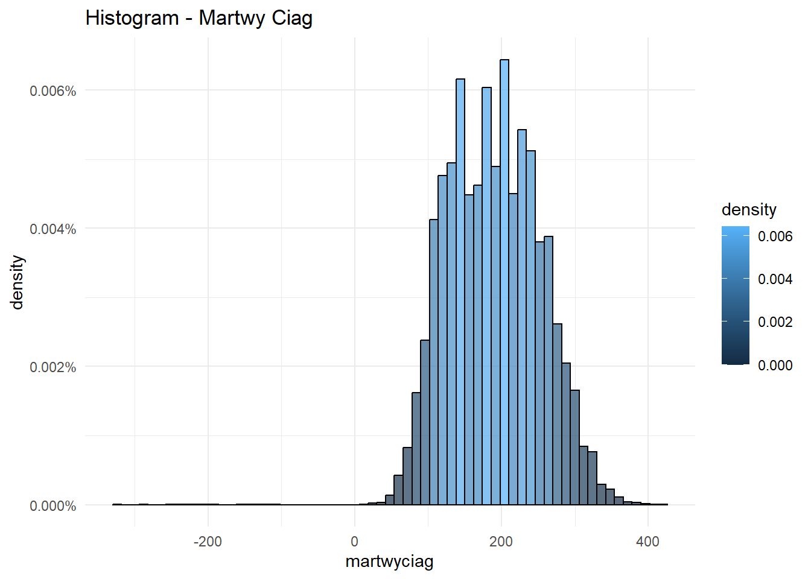

Przedmiotem analizy są dane ze zbioru zawierającego informacje na temat trójboistów zrzeszonch w ramach federacji IPF. Dane zostały udostępnione na warunkach licencji GNU AGPLv3. Głównymi zmiennymi, które będą nas interesować są AgeClass (zmienne kategoryczna określająca przedział wiekowy zawodnika) oraz zmienne ciągłe BodyweightKg, Best3BenchKg, Best3SquatKg, Best3DeadliftKg i TotalKg, które wyrażają masę ciała zawodnika, wyniki w poszcególnych bojach (wyciskanie na ławce, przysiad ze sztangą oraz martwy ciąg), jak i wynik całkowity.
1.1 Pytania badawcze
W ramach analizy postaramy się odpowiedzieć na następujące pytania:
Czy istnieje zależność między wagą a wynikami w poszczególnych bojach?
Jakie parametry opisują rozkłady poszczególnych zmiennych?
W jaki sposób różnią się rozkłady wyników oraz wagi w zależności od wieku?
Ładowanie danych
Wpierw przystąpimy do załadowania potrzebnych bibliotek
Warning: pakiet 'ggplot2' został zbudowany w wersji R 4.3.2
── Attaching core tidyverse packages ──────────────────────── tidyverse 2.0.0 ──
✔ dplyr 1.1.3 ✔ readr 2.1.4
✔ forcats 1.0.0 ✔ stringr 1.5.0
✔ ggplot2 3.4.4 ✔ tibble 3.2.1
✔ lubridate 1.9.3 ✔ tidyr 1.3.0
✔ purrr 1.0.2
── Conflicts ────────────────────────────────────────── tidyverse_conflicts() ──
✖ dplyr::filter() masks stats::filter()
✖ dplyr::lag() masks stats::lag()
ℹ Use the conflicted package (<http://conflicted.r-lib.org/>) to force all conflicts to become errors
You can add options to executable code like this
dane <-read.csv("../menpowerlifting.csv")
Jak widać mamy doczynienia z bardzo dużym zbiorem danych.
dim(dane)
[1] 158266 41
Tym samym w celu dalszej analizy wygenerujemy losową próbkę o długości 5000
probka <-sample_n(dane, 5000)
Tak się prezentuje 10 początkowych obserwacji
head(probka)
Name Sex Event Equipment Age AgeClass BirthYearClass
1 Eduardo Flores Carrasco M SBD Raw 17.0 16-17 14-18
2 Igor Mesitov M SBD Raw 26.0 24-34 24-39
3 Daniil Kondykov M SBD Raw 13.5 13-15 14-18
4 Henri Vauto M SBD Raw 33.5 24-34 24-39
5 Loren Nienajadlo M SBD Raw NA 13-15
6 Kasper Bugaji M SBD Raw NA
Division BodyweightKg WeightClassKg Squat1Kg Squat2Kg Squat3Kg Squat4Kg
1 Subjunior 64.75 66 145 160 165 NA
2 Pro Open 87.30 90 130 -140 145 NA
3 Sub-Juniors 85.30 83+ NA NA NA NA
4 Open 81.91 83 200 220 230 NA
5 12-13 44.00 44 NA NA NA NA
6 Open 99.90 105 NA NA NA NA
Best3SquatKg Bench1Kg Bench2Kg Bench3Kg Bench4Kg Best3BenchKg Deadlift1Kg
1 165.00 -87.5 90 92.5 NA 92.50 180
2 145.00 110.0 120 -125.0 NA 120.00 160
3 75.00 NA NA NA NA 50.00 NA
4 230.00 140.0 150 -152.5 NA 150.00 225
5 28.12 NA NA NA NA 20.41 NA
6 235.00 NA NA NA NA 155.00 NA
Deadlift2Kg Deadlift3Kg Deadlift4Kg Best3DeadliftKg TotalKg Place Dots
1 195 202.5 NA 202.5 460.00 2 365.62
2 175 185.0 NA 185.0 450.00 1 295.56
3 NA NA NA 105.0 230.00 3 152.95
4 245 -255.0 NA 245.0 625.00 5 425.10
5 NA NA NA 49.9 98.43 1 111.95
6 NA NA NA 247.5 637.50 1 392.56
Wilks Glossbrenner Goodlift Tested Country State Federation ParentFederation
1 366.98 356.92 72.44 Yes FECHIPO IPF
2 291.90 280.14 60.73 WPC-RUS WPC
3 151.12 145.18 31.40 Yes FPR IPF
4 420.51 404.74 87.10 Yes Finland SVNL IPF
5 116.60 115.67 19.07 RAWU
6 388.13 370.71 80.57 Yes Canada ON CPU IPF
Date MeetCountry MeetState MeetTown
1 2023-06-10 Chile
2 2014-09-27 Russia KLU Kaluga
3 2013-11-22 Russia CHE Chelyabinsk
4 2020-03-13 Finland Oulu
5 2015-11-05 USA FL Tampa
6 2017-03-25 Canada ON Courtice
MeetName
1 VII Campeonato Nacional
2 Adrenaline
3 Chelyabinsk City Youth Classic Powerlifting Championships
4 Klassisen voimanoston SM-kisat
5 Tony Conyers Extravaganza
6 Invictus Open
Interesować nas będą tylko zmienne AgeClass, BodyWeightKg, Best3BenchKg, Best3DeadliftKg, Best3SquatKg, TotalKg
# Assuming your dataframe is named 'probka'# Replace 'probka' with the actual name of your dataframelibrary(ggplot2)par(mfrow =c(3, 2))# Plot normalized histograms for each level of the "wiek" factorggplot(probka, aes(x = wiek, y = ..count.., fill = ..count..)) +geom_bar(color ="black", alpha =0.7, position ="identity") +ggtitle("Histogram - Wiek") +theme_minimal()
Code
ggplot(probka, aes(x = masa, y = ..density.., fill = ..density..)) +geom_histogram(binwidth =7, color ="black", alpha =0.7, position ="identity") +ggtitle("Histogram - Masa") +theme_minimal() +scale_y_continuous(labels = scales::percent_format(scale =1))
Code
ggplot(probka, aes(x = lawka, y = ..density.., fill = ..density..)) +geom_histogram(binwidth =10, color ="black", alpha =0.7, position ="identity") +ggtitle("Histogram - Lawka") +theme_minimal() +scale_y_continuous(labels = scales::percent_format(scale =1))
Code
ggplot(probka, aes(x = przysiad, y = ..density.., fill = ..density..)) +geom_histogram(binwidth =10, color ="black", alpha =0.7, position ="identity") +ggtitle("Histogram - Przysiad") +theme_minimal() +scale_y_continuous(labels = scales::percent_format(scale =1))
Code
ggplot(probka, aes(x = martwyciag, y = ..density.., fill = ..density..)) +geom_histogram(binwidth =12, color ="black", alpha =0.7, position ="identity") +ggtitle("Histogram - Martwy Ciag") +theme_minimal() +scale_y_continuous(labels = scales::percent_format(scale =1))

Code
ggplot(probka, aes(x = total, y = ..density.., fill = ..density..)) +geom_histogram(binwidth =20, color ="black", alpha =0.7, position ="identity") +ggtitle("Histogram - Total") +theme_minimal() +scale_y_continuous(labels = scales::percent_format(scale =1))